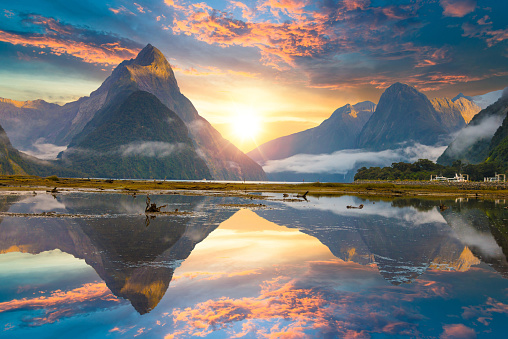
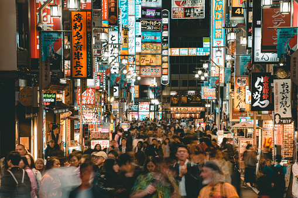
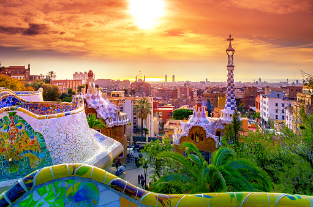
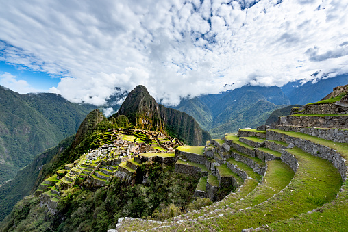
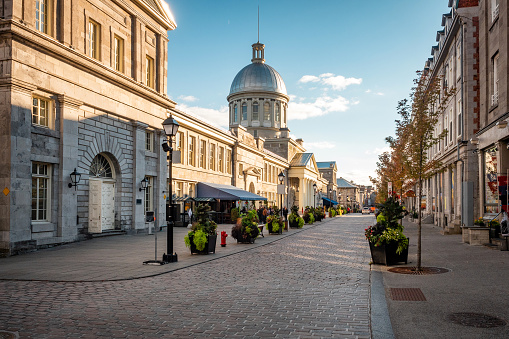

The Best Places to Visit in the World
Dec 9, 2021
The list of the best places to visit in the world must include great cities, each of which has a lot of individual sites or must-see places to visit.
Read our list of the best places to visit in the world for more ideas on where to go and what to see.
1.South Island, New Zealand

South Island, the larger but less populated of New Zealand's two islands, was chosen for its "breathtaking scenery, once-in-a-lifetime experiences, and affordable activities."
the 33.5-mile Milford Sound hike, which is limited to 90 people at a time, is considered one of the world's best treks, with stops at Lake Te Anau, suspension bridges, a mountain pass, and the country's tallest waterfall, Sutherland Falls.
2.Paris, France

Paris has it all: world-class cuisine, iconic landmarks, and centuries of history..
Though you'll want to spend your time visiting popular tourist attractions such as the Eiffel Tower and the Musee d'Orsay, you should also make time to explore other parts of Paris, such as the city's 20 diverse neighborhoods known as arrondissements.
3.London, England

From live Shakespeare performances to truly beautiful museums such as the National Gallery, London will enrich your mind and your senses.
Another must-see attraction is the Tower of London, a historic castle on the north bank of the Thames.
4.Rome, Italy

Stroll through Rome and you'll come across some of the world's greatest treasures — an incredible collection of paintings, ceilings, and fountains created by artists such as Michelangelo, Caravaggio, Raphael, and Bernini.
After all that exploring, there are plenty of opportunities to eat and drink, including at several restaurants.
5.Tokyo, Japan

The Japanese capital is one of the world's most exciting cities. It is notoriously fast-paced, with neon lights illuminating the crowds as they rush to their next destination.
However, Tokyo is also a city of temples, picnics under the cherry blossoms, and ensuring that you enjoy the abundance of delicious food that can be found on almost every corner.
6.Barcelona, Spain

This cosmopolitan Spanish city has some amazing architecture, and the Las Ramblas is always bustling with nightlife and shopping; for an enriching arts experience, follow the progression of famed artist Pablo Picasso at Museo Picasso.
7.Maldives

If you enjoy sunsets, white beaches, and aesthetic blue waters, this is the destination for you.
Don't worry about getting bored, either: go snorkeling or scuba diving, relax in the spa, or wander around the bustling Male' Fish Market.
8.New York

As one of the world's leading metropolises for art, fashion, food and theater, New York is a city every traveler should visit. Whether you come for a day trip or for an extended stay, choosing what to see and do is a hard task. the possibilities are endless.
9.Bali, Indonesia

Bali has become a popular foreigner destination in recent years, with groups of "travellers" working and playing there. However, the island has not lost its original charm as a result of the increased tourism and remains a fantastic destination. Spend your time swimming at the beach, hiking active volcanoes, visiting temples, and admiring views of tiered rice terraces.
10.Sydney, Australia

With its iconic Opera House and, Sydney is the perfect spot to vacation if you’re looking for a blend of culture, arts, nightlife and relaxation.
Spend the day on the water at Darling Harbour, then head to the Royal Botanic garden for even more fresh air.
11.Machu Picchu, Peru

The Mchu Picchu is an archaeological masterpiece, it is the ruins of an ancient Incan city that dates back more than 600 years. It's no surprise that this is one of the Seven Wonders of the World and Peru's most popular tourist attraction.
Visi
12.Dubai, United Arab Emirates

Dubai has one of the world's largest shopping malls, the world's tallest tower, one of the world's largest man-made marinas.
This Las Vegas-style urban center in the United Arab Emirates offers visitors an eclectic mix of activities, including beaches, waterparks, tons of shopping, and even an indoor ski resort. Outside of the city's skyscrapers, the vast desert awaits, best explored by quad-biking or sandboarding.
13.Santorini, Greece

Santorini is a photographer's dream, with its picturesque blue-domed churches, whitewashed buildings, and colorful beaches.
Make time to visit some of Santorini's archaeologically significant sites, such as Ancient Akrotiri (a volcanic ash-preserved ancient city).
14.Montreal, Canada

The historic district is filled with charming shops and cafés; this Canadian city can provide an opportunity to experience a taste of Europe in North America.
There is also a thriving food scene in the city, with several popular farmers markets, including the Atwater Market and the Jean Talon Market. It's also famous for its bagels, which are prepared hot and fresh by several iconic must-see bakeries.
15.Istanbul, Turkey

Another destination that offers a great mix of culture, food, and history is Turkey's capital city.
Istanbul has excellent public transportation, making it simple to get around and see all of the major sites and monuments. The Blue Mosque, Hagia Sofia, and Topkapi Palace are all must-sees.
References:
https://www.farandwide.com/|| https://www.planetware.com/|| https://unsplash.com/||